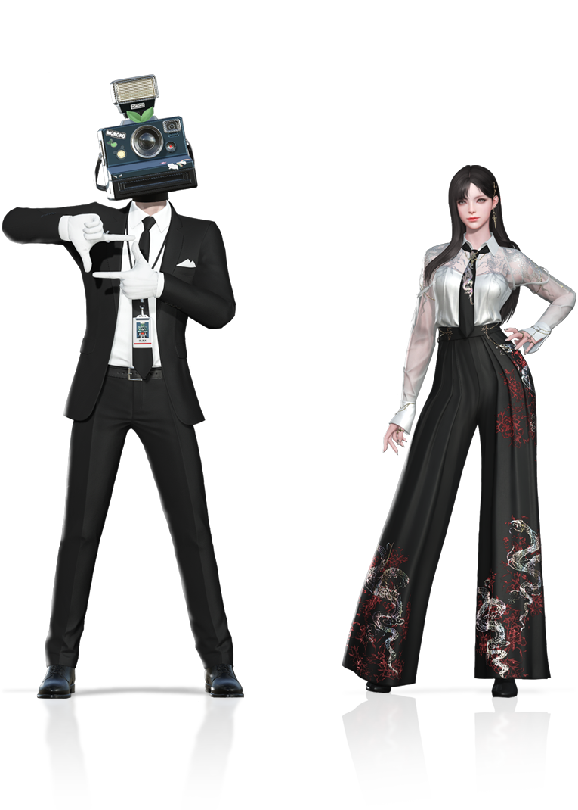
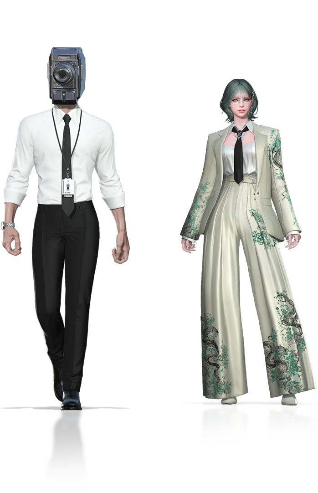

Korean Lost Ark · Notice Translation
Part 2 Update: Advance Notice of Major Reworks
Direct translation. No commentary or extrapolation added.
AI-generated translation. This English version was produced with AI assistance and may contain errors or mistranslations. Always verify against the original Korean sources linked in each section below.
On this page
Advance Notice of Major Reworks with the Lost Ark Part 2 Update
Tables marked with a triangle are collapsed in the original notice as well (“click to expand”).
Hello, this is Lost Ark.
This is an advance notice of the major reworks coming with the Lost Ark Part 2 update.
In Lost Ark Part 2, many existing systems will be reworked and new systems will be introduced,
and as a result the gear, currencies, items and so on that Adventurers currently own will also change.
Please refer to the guide below and check the reworks coming with the Lost Ark Part 2 update in advance.
Changes from the Gear System and Gear Growth Rework
Gear composition and growth are being reworked across the board.
- New gear is added, expanding equippable gear to 16 slots in total.
- Gear (weapons, armor)
- 2 weapons: Weapon, Vambrace
- 6 armor pieces: Helmet, Shoulders, Chest, Pants, Gloves, Belt
- Accessories (Treasures, accessories)
- 2 Treasures: Holy Relic, Seal
- 6 accessories: Necklace, Earring, Earring, Ring, Ring, Bracelet
- Gear (weapons, armor)
- New gear/accessories are granted the following effects.
- Weapon Power, Vitality, Physical Defense, Magical Defense, basic stat (Strength/Dexterity/Intelligence)
- New gear/accessories cannot be destroyed, sold or traded.
Gear growth is being reworked.
- The honing system is reworked and changes to honing the slots of weapons and armor.
- With the honing system rework, the Advanced Honing and Special Honing systems are removed.
- With the gear growth rework, new materials are used for honing, and growth materials are reworked along with it.
- Materials used for the existing honing (normal/Advanced/Special Honing) and growth materials are removed or replaced depending on tier and type.
- All Tier 3 honing materials and growth materials are removed, except ‘Honor Shards’ and ‘Honor Shard Pouches’.
- Destruction Stone/Guardian Stone type materials, Leapstones, Fusion Materials
- Special honing materials (Metallurgy/Tailoring) used for honing Tier 3 gear, additional honing materials, Special Honing materials
※ Honor Shards and Honor Shard Pouches are replaced with Silver.
※ We recommend exchanging the Tier 3 materials you hold for Tier 4 materials through the ‘Honing Material Exchange’ NPC before the Lost Ark Part 2 regular maintenance.
- Tier 4 honing materials and growth materials are replaced, depending on type, with new growth materials at a set ratio or with Part 2 Growth Material Exchange Tokens.
- Fusion Materials, Destruction Stone/Guardian Stone type materials and Breath items, which are used with the same function in Part 2, are replaced with Part 2 growth materials at a set ratio.
※ Besides these, Leapstones, Destiny Shards, Metallurgy/Tailoring and Special Honing materials (Circulation Leapstones, Transition Leapstones) and so on are replaced with Part 2 Growth Material Exchange Tokens.
- Fusion Materials, Destruction Stone/Guardian Stone type materials and Breath items, which are used with the same function in Part 2, are replaced with Part 2 growth materials at a set ratio.
- All Tier 3 honing materials and growth materials are removed, except ‘Honor Shards’ and ‘Honor Shard Pouches’.
The Quality system is removed.
- Gear and accessories are no longer given Quality.
- With the removal of the Quality system, the Quality Upgrade system is removed along with it.
- Quality Upgrade materials are removed and replaced with Part 2 Growth Material Exchange Tokens.
- For the existing weapons and armor a character holds, additional Part 2 Growth Material Exchange Tokens are given according to the Quality value of the highest-Quality piece for each slot.
※ Sidereal weapons are not included in the payout criteria.
Replacement of Existing Gear
Existing gear is replaced with new gear based on the type or item level of the gear you hold.
※ The growth level of existing gear is reflected in the new gear’s growth state and honing stage, in line with the Part 2 gear growth structure.
- Gear replaced according to gear type
- Eligible gear is replaced with new gear.
- Where usable gear differs by class, gear that fits the class is given.
- Gear replaced according to item level
- New gear for the same slot and additional gear are given according to the item level of the existing gear.
- The rarity and polish level of the new gear are set based on the item level of the existing gear.
- The replacement gear may have a slightly higher item level than the existing gear.
※ Example) If the existing gear’s item level is above 1725 and up to 1730 → the new gear’s item level is set to 1730 - The item level of the replacement gear for the 5 armor slots is determined by the item level of the existing gear in the same slot.
- For the weapon, the 6 new pieces below are given, and each piece’s item level is determined by the item level of the existing weapon.
- Weapon, Vambrace, Belt, Holy Relic, Seal, Bracelet
- The honing stage of existing gear is reflected in the new gear slot for the same slot.
- For the Vambrace, the existing Vambrace’s honing stage is carried over as it is to the new Vambrace slot’s honing stage.
- For the Belt, the weapon’s honing stage is not reflected, and honing starts anew.
- Artisan’s Energy accumulated on existing gear is kept at the same value on the new gear slot for the same slot.
- New gear for the same slot and additional gear are given according to the item level of the existing gear.
New gear transfer criteria by existing gear item level
| Item level of existing gear | Item level and details of new gear | |||
| Above | Up to | Transferred gear | Polish level | Item level |
| 50 | 100 | Tier 1 Uncommon | 0 | 100 |
| 100 | 150 | Tier 1 Rare | 0 | 150 |
| 150 | 200 | Tier 1 Epic | 0 | 200 |
| 200 | 250 | Tier 1 Legendary | 0 | 250 |
| 250 | 600 | Tier 2 Common | 0 | 600 |
| 600 | 700 | Tier 2 Uncommon | 0 | 700 |
| 700 | 800 | Tier 2 Rare | 0 | 800 |
| 800 | 900 | Tier 2 Epic | 0 | 900 |
| 900 | 1000 | Tier 2 Legendary | 0 | 1000 |
| 1000 | 1200 | Tier 3 Common | 0 | 1200 |
| 1200 | 1300 | Tier 3 Uncommon | 0 | 1300 |
| 1300 | 1400 | Tier 3 Rare | 0 | 1400 |
| 1400 | 1500 | Tier 3 Epic | 0 | 1500 |
| 1500 | 1600 | Tier 3 Legendary | 0 | 1600 |
| 1600 | 1675 | Tier 4 Uncommon | 0 | 1675 |
| 1675 | 1680 | Tier 4 Uncommon | 1 | 1680 |
| 1680 | 1685 | Tier 4 Uncommon | 2 | 1685 |
| 1685 | 1690 | Tier 4 Uncommon | 3 | 1690 |
| 1690 | 1695 | Tier 4 Uncommon | 4 | 1695 |
| 1695 | 1700 | Tier 4 Rare | 0 | 1700 |
| 1700 | 1705 | Tier 4 Rare | 1 | 1705 |
| 1705 | 1710 | Tier 4 Rare | 2 | 1710 |
| 1710 | 1715 | Tier 4 Rare | 3 | 1715 |
| 1715 | 1720 | Tier 4 Rare | 4 | 1720 |
| 1720 | 1725 | Tier 4 Epic | 0 | 1725 |
| 1725 | 1730 | Tier 4 Epic | 1 | 1730 |
| 1730 | 1735 | Tier 4 Epic | 2 | 1735 |
| 1735 | 1740 | Tier 4 Epic | 3 | 1740 |
| 1740 | 1745 | Tier 4 Epic | 4 | 1745 |
| 1745 | 1750 | Tier 4 Legendary | 0 | 1750 |
| 1750 | 1755 | Tier 4 Legendary | 1 | 1755 |
| 1755 | 1760 | Tier 4 Legendary | 2 | 1760 |
| 1760 | 1765 | Tier 4 Legendary | 3 | 1765 |
| 1765 | 1770 | Tier 4 Legendary | 4 | 1770 |
| 1770 | 1775 | Tier 4 Relic | 2 | 1785 |
| 1775 | 1780 | Tier 4 Relic | 3 | 1790 |
| 1780 | 1785 | Tier 4 Relic | 4 | 1795 |
| 1785 | 1790 | Tier 4 Ancient | 0 | 1800 |
| 1790 | 1795 | Tier 4 Ancient | 2 | 1810 |
| 1795 | 1800 | Tier 4 Ancient | 3 | 1815 |
Sidereal Weapon Rework and Replacement
- The growth ranges of Sidereal weapons and the composition of each range are being reworked.
- The existing ‘Sidereal Weapon Evolution’ and ‘Sidereal Conversion’ functions are removed.
- Sidereal weapons change to grow through polishing from a certain range onward, and item level and the weapon slot’s honing stage rise with the polish level.
- With the Sidereal weapon rework, the material amounts needed for growth are adjusted.
- Sidereal weapons you currently hold are replaced with new Sidereal weapons.
- The evolution stage and Ella infusion history of the Sidereal weapon you currently hold are reflected in the new Sidereal weapon’s Ella infusion stage, item level and honing stage.
- If you hold both a normal weapon and a Sidereal weapon, the replacement criteria for new gear are determined by the weapon with the higher item level.
※ If you hold a Sidereal weapon of item level 1800 or higher, the new gear given according to the weapon (Vambrace/Belt/Holy Relic/Seal/Bracelet) is given on the basis of a honing stage 25 weapon.
※ The item level of the newly given Sidereal weapon may change depending on the stage of the existing Sidereal weapon.
- If the existing Sidereal weapon’s evolution reached certain stages, part of the materials previously used is refunded in line with the adjusted growth material amounts.
※ The refund amount is determined by the difference between the materials used and the materials needed to reach that growth stage after replacement.
※ Sidereal Energy and Romantic Material Kits are refunded as character-bound items.
Sidereal weapon replacement and material refund criteria
※ Based on the existing Sidereal weapon’s evolution stage and Ella infusion stage, each table shows the new Sidereal weapon’s growth state and the material refund amount.
Item level transfer
| Existing Sidereal weapon | New Sidereal weapon given as replacement | |||
| Evolution stage | Ella infusion stage | Item level | Ella infusion stage | Item level |
| 0 | - | 1100 | Stage 1 | 1100 |
| 1 | - | 1200 | ||
| 2 | - | 1300 | ||
| 3 | - | 1400 | ||
| 4 | - | 1500 | ||
| 5 | - | 1600 | ||
| 6 | - | 1625 | Stage 2 | 1625 |
| 7 | - | 1635 | ||
| 6 | Stage 1 | 1650 | ||
| 7 | Stage 1 | 1665 | ||
| 6 | Stage 2 | 1675 | ||
| 8 | - | 1645 | ||
| 7 | Stage 2 | 1695 | Stage 3 | 1735 |
| 7 | Stage 3 | 1785 | ||
| 8 | Stage 1 | 1680 | ||
| 8 | Stage 2 | 1715 | ||
| 8 | Stage 3 | 1775 | ||
| 9 | Stage 2 | 1745 | ||
| 9 | Stage 3 | 1800 | Stage 4 | 1840 |
| 10 | Stage 3 | 1830 | Stage 4 + polish level 5 | 1865 |
Honing stage transfer
| Existing gear | New Sidereal weapon given as replacement | |
| Evolution stage | Ella infusion stage | Honing stage |
| 0 | - | Stage 0 |
| 1 | - | |
| 2 | - | |
| 3 | - | |
| 4 | - | |
| 5 | - | |
| 6 | - | |
| 7 | - | |
| 6 | Stage 1 | Stage 9 |
| 7 | Stage 1 | |
| 6 | Stage 2 | |
| 8 | - | Stage 11 |
| 7 | Stage 2 | Stage 12 |
| 7 | Stage 3 | Stage 14 |
| 8 | Stage 1 | |
| 8 | Stage 2 | Stage 18 |
| 8 | Stage 3 | Stage 20 |
| 9 | Stage 2 | Stage 22 |
| 9 | Stage 3 | Stage 25 |
| 10 | Stage 3 | |
Growth material refund
| Existing gear | Amount of materials refunded | ||
| Evolution stage | Ella infusion stage | Sidereal Energy (character-bound) | Romantic Material Kit |
| Stage 0 | - | - | - |
| Stage 1 | - | 1 | 10 |
| Stage 2 | - | 3 | 310 |
| Stage 3 | - | 8 | 810 |
| Stage 4 | - | 18 | 1,810 |
| Stage 5 | - | 28 | 3,310 |
| Stage 6 | - | 20 | 3,000 |
| Stage 7 | - | 40 | 7,000 |
| Stage 6 | Stage 1 | 40 | 11,500 |
| Stage 7 | Stage 1 | 60 | 15,500 |
| Stage 6 | Stage 2 | 60 | 20,000 |
| Stage 8 | - | 70 | 12,000 |
| Stage 7 | Stage 2 | 20 | 12,000 |
| Stage 7 | Stage 3 | 20 | 14,500 |
| Stage 8 | Stage 1 | 30 | 8,500 |
| Stage 8 | Stage 2 | 50 | 17,000 |
| Stage 8 | Stage 3 | 50 | 19,500 |
| Stage 9 | Stage 2 | 80 | 24,000 |
| Stage 9 | Stage 3 | 20 | 10,500 |
| Stage 10 | Stage 3 | - | - |
Changes from the Accessory System and Accessory Growth Rework
- Accessories are incorporated into gear and are given an item level.
- Accessory growth is being reworked.
- The accessory polishing system is removed and changes to a system of growing accessory slots.
- For bracelets too, the effect-granting system is removed and changes to a system of growing accessory slots.
- With the accessory system rework, new accessories are given based on the piece with the highest item level among the weapons/armor you hold.
- Weapon → Holy Relic, Seal, Bracelet
- Helmet → Necklace
- Shoulders → Earring
- Chest → Earring
- Pants → Ring
- Gloves → Ring
※ The item level of the newly given accessory reflects the item level of the existing weapon/armor it is based on.
- With the accessory growth rework, the bracelet effect-granting and upgrade functions are removed.
- Bracelet Effect Reroll Ticket items are no longer used and are replaced with Part 2 Growth Material Exchange Tokens.
Replacement of Existing Accessories
Tier 4 Ancient accessories
‘Accessories with Quality 67 or higher’ are replaced as follows according to the options they have.
- Accessories with ‘valid options’: replaced with a ‘Mana Infusion Scroll’ according to the criteria below.
- The replacement Mana Infusion Scroll is given to match the existing accessory’s slot. (Example: Necklace → Necklace Mana Infusion Scroll)
- The grade of the replacement Mana Infusion Scroll follows the combination of valid options in the transfer criteria.
- Replacement Mana Infusion Scrolls are divided into grades 1 to 6, taking into overall account the existing accessory’s Auction House trade price and the expected probability of obtaining its options.
- A scroll’s grade is determined by the combination of valid options on the accessory, with no distinction between accessories still being polished and accessories with polishing complete.
- For support earrings, the Mana Infusion Scroll grade is determined by criteria separate from other accessories.
※ For detailed criteria, please check [Tier 4 accessory Mana Infusion Scroll criteria and valid options for DPS/support] below. - The replacement Mana Infusion Scroll follows the existing accessory’s trade count.
- Example) Existing accessory tradable 2 times → Mana Infusion Scroll tradable 2 times
- Example 2) Existing untradable accessory → untradable Mana Infusion Scroll
- Accessories without valid options, or accessories with Quality below 67, are replaced with a set amount of ‘Radiant Gem Fragments’ according to polish level.
- ‘Radiant Gem Fragments’ are changed so they can be exchanged for Silver.
Tier 4 Relic accessories
For ‘necklaces and rings with Quality 67 or higher and support High/High options’, replacement is as follows according to the options they have.
- Accessories with ‘valid options’: replaced with a ‘Mana Infusion Scroll’ according to the criteria below.
- The replacement Mana Infusion Scroll is given to match the existing accessory’s slot. (Example: existing Necklace → Necklace Mana Infusion Scroll)
- The grade of the replacement Mana Infusion Scroll follows the combination of valid options in the transfer criteria.
- The replacement Mana Infusion Scroll follows the existing accessory’s trade count.
- Example: Existing accessory tradable 2 times → Mana Infusion Scroll tradable 2 times
- Example 2) Existing untradable accessory → untradable Mana Infusion Scroll
- For detailed criteria, please check [Tier 4 accessory Mana Infusion Scroll criteria and valid options for DPS/support] below.
- Accessories without valid options, or accessories with Quality below 67: replaced with a set amount of ‘Radiant Gem Fragments’ according to polish level.
- ‘Radiant Gem Fragments’ are changed so they can be exchanged for Silver.
Tier 4 accessory Mana Infusion Scroll criteria and valid options for DPS/support
Mana Infusion Scroll criteria
※ When determining a Mana Infusion Scroll’s grade, option 3 is counted only for High/High/High and High/High/Mid combinations; other combinations are determined by options 1 and 2 only.
| Category | Type | Option grades | Replacement item |
| Tier 4 Ancient | DPS Necklace/Earring/Ring Support Necklace/Ring | High/High/High | Grade 1 Scroll |
| High/High/Mid | Grade 2 Scroll | ||
| High/High | Grade 3 Scroll | ||
| High-Mid / Mid-High | Grade 4 Scroll | ||
| High-Low / Low-High | Grade 5 Scroll | ||
| Mid-Mid or lower | Grade 6 Scroll | ||
| Tier 4 Ancient | Support Earring | High/High/High (Max HP) | Grade 2 Scroll |
| High/High/High (Party Shield/Recovery Effect %) | Grade 3 Scroll | ||
| High/High/Mid | Grade 4 Scroll | ||
| High/High | Grade 5 Scroll | ||
| High/Mid or lower | Grade 6 Scroll | ||
| Tier 4 Relic | Support Necklace/Ring | High/High | Grade 5 Scroll |
Options for DPS/support
| Category | Options 1, 2 | Option 3 | |
| DPS | Necklace | Additional Damage % | Attack Power + Weapon Power + |
| Damage to Enemies % | |||
| Earring | Attack Power % | ||
| Weapon Power % | |||
| Ring | Crit Rate % | ||
| Crit Damage % | |||
| Support | Necklace | Brand Power % | Weapon Power + Max HP + |
| Serenade, Faith, Harmony gauge gain % | |||
| Earring | Weapon Power % Weapon Power + | Max HP + Party Shield Effect % Party Recovery Effect % | |
| Ring | Ally Attack Power Enhancement Effect % | Weapon Power + Max HP + | |
| Ally Damage Enhancement Effect % | |||
Tier 3 and lower accessories
- Existing accessories of Tier 3 or lower are removed and are not replaced.
Replacement of Existing Bracelets
Tier 4 bracelets
They are handled as follows depending on whether the bracelet has had effects granted.
- Bracelets with effect granting in progress or complete are replaced according to the criteria below.
- Only the 1 highest-performing bracelet among those the character holds is replaced with a ‘Seal Mana Infusion Scroll’.
※ Seal Mana Infusion Scrolls are divided into grades 1 to 21 in consideration of the existing bracelet’s performance. - The grade of the replacement Seal Mana Infusion Scroll follows the combination of options on the existing bracelet.
- The options on the existing bracelet are calculated separately by DPS and support criteria, and the criteria giving the higher grade are adopted.
- However, for DPS (all classes except Bard, Artist, Paladin and Valkyrie), bracelets made up only of support options are excluded from the transfer.
- Relic bracelets have their performance calculated by converting them to an Ancient bracelet basis.
- Only the 1 highest-performing bracelet among those the character holds is replaced with a ‘Seal Mana Infusion Scroll’.
- Bracelets other than the highest-performing one, and bracelets with no effects granted, are replaced with bracelet dismantle results.
※ If you hold a Tier 4 bracelet that has not yet had effects granted, we recommend granting its effects before the Lost Ark Part 2 regular maintenance.
※ The dismantle results will be exchangeable for Silver through a separate shop.
Tier 4 bracelet transfer criteria and effects for DPS/support
※ The tables below sort bracelet effects into tiers by DPS/support performance; performance may differ even within the same tier.
DPS effects
| Tier | Bracelet effect |
| Tier 1 | Crit Rate increase & damage increase on critical hits |
| Crit Damage increase & damage increase on critical hits | |
| Additional Damage increase & damage increase to Demons and Archdemons | |
| Cooldown increase & Damage to Enemies increase | |
| Damage to Enemies increase & damage increase to Staggered enemies | |
| Tier 2+ | Crit/Specialization/Swiftness |
| Tier 2 | Damage to Enemies increase for skills that are not directional attacks |
| Damage to Enemies increase for Back Attack skills | |
| Damage to Enemies increase for Head Attack skills | |
| Additional Damage increase | |
| Damage to Enemies increase | |
| Crit Damage increase | |
| Crit Rate increase | |
| Tier 3+ | Weapon Power increase & Weapon Power increase while own HP is 50% or higher |
| Weapon Power increase & Weapon Power increase for 120s every 30s | |
| Tier 3 | Weapon Power increase |
| On attack hit, Weapon Power for 10s every second & Attack and Move Speed increase | |
| Tier 4 | Target Defense reduction & Ally Attack Power Enhancement Effect increase |
| Target Crit Resistance reduction & Ally Attack Power Enhancement Effect increase | |
| Target Crit Damage Resistance reduction & Ally Attack Power Enhancement Effect increase | |
| Damage to Enemies increase for 5s for targets given a protection effect by a party effect & Ally Attack Power Enhancement Effect increase | |
| Tier 5 | Strength/Dexterity/Intelligence |
Support effects
| Tier | Bracelet effect |
| Tier 1 | Target Defense reduction & Ally Attack Power Enhancement Effect increase |
| Target Crit Resistance reduction & Ally Attack Power Enhancement Effect increase | |
| Target Crit Damage Resistance reduction & Ally Attack Power Enhancement Effect increase | |
| Damage to Enemies increase for 5s for targets given a protection effect by a party effect & Ally Attack Power Enhancement Effect increase | |
| Tier 2 | Specialization/Swiftness |
| Ally Damage Enhancement Effect increase | |
| Ally Attack Power Enhancement Effect increase | |
| Tier 3+ | Weapon Power increase & Weapon Power increase while own HP is 50% or higher |
| Weapon Power increase & Weapon Power increase for 120s every 30s | |
| Tier 3 | Weapon Power increase |
| On attack hit, Weapon Power for 10s every second & Attack and Move Speed increase | |
| Tier 4 | Strength/Dexterity/Intelligence |
Tier 3 bracelets
- Regardless of whether effects were granted, they are not replaced and are removed.
Changes from the Engraving System Rework
- The base grade of all engravings becomes Relic, and they change to be collected from Relic grade onward.
- An engraving’s base effect is applied as the Relic stage 0 effect.
- Legendary Engraving Recipes change to no longer be used.
- A system for upgrading engraving slots is added, and Ability Stones and the faceting system are removed.
- Existing Ability Stones are removed and handled as follows depending on what you hold and the faceting result.
- Among faceted Ability Stones, stones with an activation point total of 4 or more that meet the valid engraving condition are reflected in the Engraving Slot Upgrade level.
- If you hold several eligible stones, the Engraving Slot Upgrade level is set based on the stone with the highest activation point total.
- Even with the same activation point total, the Engraving Slot Upgrade level may be set differently depending on how the activation points are distributed between the engravings.
※ The reduction effect on an Ability Stone does not affect the Engraving Slot Upgrade. - The valid engraving condition is an Ability Stone with 2 engravings that are valid for DPS/support respectively.
- DPS: 2 DPS engravings
- Support: 2 support engravings or 2 DPS engravings
※ Valid engravings are divided by DPS and support criteria, and the ‘Awakening’ engraving counts as a valid engraving for both DPS and support.
- Among faceted Ability Stones, stones with an activation point total of 4 or more that meet the valid engraving condition are reflected in the Engraving Slot Upgrade level.
Valid engravings and Ability Stone transfer criteria
Valid engravings
- DPS: Awakening, Master Brawler, Ambush Master, Master’s Tenacity, Raid Captain, MP Efficiency Increase, Barricade, Broken Bone, All-Out Attack, Super Charge, Sight Focus, Adrenaline, Stabilized Status, Disrespect, Ether Predator, Keen Blunt Weapon, Grudge, Cursed Doll, Precise Dagger, Mass Increase, Propulsion, Hit Master
- Support: Awakening, Drops of Ether, Vital Point Hit, Magick Stream, Crushing Fist, Crisis Evasion, Expert, Spirit Absorption, Heavy Armor, Max MP Increase, Explosive Expert
Engraving Slot Upgrade level by activation point total
| Activation point total | Engraving Slot Upgrade level applied |
|---|---|
| Total 4 (2+2) | 1 engraving slot set to level 3 |
| Total 4 (3+1) | 1 engraving slot set to level 5 |
| Total 5 (4+1, 3+2) | 2 engraving slots set to level 7 |
| Total 6 (4+2) | 3 engraving slots set to level 7 |
| Total 6 (3+3) | 4 engraving slots set to level 7 |
| Total 7 (4+3) | 5 engraving slots set to level 7 |
| Total 8 (4+4) | 5 engraving slots set to level 7, plus an additional item |
- Faceted stones not reflected in the Engraving Slot Upgrade are handled as follows.
- Valid engraving combination with an activation point total of 5 or more: accessory slot growth materials given according to the activation point total
- Valid engraving combination with an activation point total of 4: replaced with ‘Transcendence Powder’
- The items below are replaced with ‘Transcendence Powder’ according to grade.
- Unfaceted Ability Stones
- Ability Stones without a valid engraving combination
※ Activation points are not considered; they are replaced with Transcendence Powder. - Soaring Stone Engraving Designation Kit
※ The Soaring Stone Engraving Designation Kit is replaced with Ancient-grade ‘Holy Transcendence Powder’.
※ Transcendence Powder will later be exchangeable for Silver through a shop.
Changes from the Gem System Rework
- Tradable gems are reworked so they can be used at the Roster level.
- When a gem is registered in the Roster-wide shared space, several characters in the Roster can use that one gem at the same time.
※ Character-bound gems can only be used by the character that holds them. - Gems are kept in ‘Material Storage’.
- The requirements for equipping gems are removed.
- When a gem is registered in the Roster-wide shared space, several characters in the Roster can use that one gem at the same time.
- The way gems are equipped is reworked.
- You can place the gems you hold on the skills you want to apply their effects.
- With the rework of how gems are equipped, gem presets are removed.
※ The cost previously spent on expanding gem presets is refunded.
- A higher Tier 4 gem, the ‘Sacred Radiance Gem’, is added.
- You can fuse 3 Level 10 Radiance Gems to obtain a Level 1 Sacred Radiance Gem.
- For Sacred Radiance Gems, fusing 2 gems of the same level gives 1 gem of the next level.
※ Example) Fusing 2 Level 1 Sacred Radiance Gems gives 1 Level 2 Sacred Radiance Gem
- With the gem system rework, all existing gems are removed, and gems eligible for replacement are replaced with the new ‘Radiance Gem’.
- All gems equipped on characters are unequipped, and replacement gems are sent to the shared storage.
- Whether a replacement gem is bound is determined by whether the existing gem was bound.
- Tier 3 Annihilation/Crimson Flame Gems (Level 3–10): replaced with a new Tier 4 ‘Radiance Gem’ 2 levels lower than the existing level.
※ Tier 3 Annihilation/Crimson Flame Gems (Level 1, 2) and gems below Tier 3 are not eligible for replacement and are removed.
※ We recommend fusing the Tier 3 Annihilation/Crimson Flame Gems (Level 1, 2) you hold into gems of Level 3 or higher before the Lost Ark Part 2 regular maintenance. - Tier 4 Doomfire/Blazing/Radiance Gems (Level 1–10): replaced with a new Tier 4 ‘Radiance Gem’ of the same level as the existing level.
- For the gems below obtained through specific routes, a selection chest is given from which you choose one of its contents.
| Type | Chest contents (choose 1) |
|---|---|
| Tier 4 Radiance Gem (Level 8) included in a paid growth product |
|
| Tier 4 Radiance Gem (Level 8) obtained from Paradise content |
|
Changes from the Combat System Rework
- The existing Domination/Endurance/Expertise stats are deleted, and a new combat stat, ‘Prowess’, is added.
- Prowess increases Damage to Enemies and Ally Attack Power Enhancement Effect according to its value.
- Part of the Domination/Endurance/Expertise values applied to existing characters is retroactively transferred to Prowess.
※ Among pet effects, existing Domination/Endurance/Expertise stats are all changed to a Prowess stat of the same value.
- Ark Passive is reworked into a structure for setting your combat style and combat stats.
- Ark Passive can be used from Combat Level 50.
- The existing Evolution and Leap passives are removed, and you can choose a combat style based on the Enlightenment passive.
- Nodes open by Combat Level according to the combat style you chose.
- Combat stats can be set by distributing points among Crit/Specialization/Swiftness/Prowess in the Ark Passive window.
- All distributable points are given when Ark Passive is unlocked.
- When you choose or change a combat style, that style’s default distribution is applied, and you can adjust it freely afterward.
- In line with the removal of the Evolution and Leap passives, each class’s Enlightenment passives and skill effects are adjusted.
- The Super Awakening skill enhancement effects of the existing Leap passive are reworked into Super Awakening skill Tripods.
- With the Ark Passive rework, the Karma system is removed.
- Items used for Karma rank and level growth are removed and replaced with Part 2 Growth Material Exchange Tokens.
- For each of Evolution/Enlightenment/Leap Karma that reached Level 22 or higher, Part 2 Growth Material Exchange Tokens are given according to the level reached.
- The Skill Rune system is removed.
- All Skill Runes you hold are removed.
- The effects of some Skill Runes are moved to other effects such as gems and PvE damage increases.
Changes from the Trade Skill System Rework
- The Trade Skill system is reworked, and the 6 Trade Skill levels previously divided into Foraging, Logging, Mining, Hunting, Fishing and Excavating are merged into a single Trade Skill level.
- The existing 6 kinds of Trade Skill XP are all added together, and the unified Trade Skill level is applied based on the combined XP.
- Existing Trade Skill materials are unified into ‘Crystals of Life’, so you obtain Crystals of Life whichever Trade Skill activity you do.
- Trade Skills are simplified, and some Trade Skills and Trade Skill minigames are removed.
- With the Trade Skill system rework, the Life Energy consumption of each Trade Skill is adjusted.
- With the Trade Skill system rework, some crafting recipes that use Trade Skill materials are removed.
- Trade Skill tiers are removed.
- With the removal of Trade Skill tiers, gatherables in regular areas change to Crystals of Life, and gatherables on the Roster Stronghold farm also change to Crystals of Life (bound).
- The research cost previously spent on Trade Skill tier research is refunded.
- With the Trade Skill system rework, Trade Skill tools are removed.
- Among the Trade Skill tools you hold, Legendary and Relic tools are replaced with Gold according to the replacement criteria, limited to 1 per eligible item.
※ If you hold several Trade Skill tools that fall under the same payout criteria, the additional ones are not replaced.
- Among the Trade Skill tools you hold, Legendary and Relic tools are replaced with Gold according to the replacement criteria, limited to 1 per eligible item.
- With the Trade Skill system rework, materials and Trade Skill-related items that can no longer be used are removed or replaced with new items depending on type.
- Existing Trade Skill materials are removed, and some materials are replaced with Crystals of Life according to per-material Market conversion criteria.
- The items below are replaced with Crystals of Life with the same bound status as the existing item.
- Trade Skill Tool Crafting Kits, Trade Skill Tool Restoration Kits, Tool Crafting Parts, Trade Skill tools below Legendary
- Existing Trade Skill charms and charm chests are replaced with new cards of the same grade.
※ The effects of existing Trade Skill charms are moved to the collection effects of Trade Skill card sets. - Among other Trade Skill-related items that lose their use, those eligible for compensation are replaced with Crystals of Life according to set criteria.
- Existing Trade Skill-related items not separately designated for replacement are removed.
Changes from the Sailing Rework
- The setup where a crew member of the same name existed separately for each grade is merged into a single crew member.
- Same-named crew members you hold are replaced with a unified crew member whose grade is determined by the number of grades you held.
※ Example) If you hold all of the Epic/Legendary/Relic crew member ‘Cals’, they are replaced with a unified Relic ‘Cals’; if you hold 2 of them, they are replaced with a unified Legendary ‘Cals’. - Sailing Crew Application Form items change to be used as crew upgrade materials.
- Crew members that have not reached the maximum grade can later be grown to the maximum grade by obtaining Crew Application Forms for the same crew member.
- Existing Crew Application Form items are replaced with the changed Crew Application Forms.
- Same-named crew members you hold are replaced with a unified crew member whose grade is determined by the number of grades you held.
- Hazardous Waters are reworked.
- Among the existing Hazardous Waters, Kelp Beds are removed.
- The locations of Hazardous Waters in the Sea of Gienah/Sea of Procyon are adjusted.
- Epic ship parts materials change to Rare grade, and the item name changes to ‘Ship Parts’.
- Existing ship parts below Epic grade are no longer used and are replaced with ‘Ship Parts’ at a set ratio.
- Pirate Coins are removed.
- Pirate Coins you hold are replaced with ‘Ocean Coins’ at a set ratio.
- The Gold reward provided by Sailing Co-op Quests is removed.
Changes from the Content Rework
End Content Lineup and Reward Changes
- The end content lineup and rewards are partly changed.
- In Part 2, the content below is treated as end content.
- Shadow Raid: Witch of Agony, Serca / Precept-Keeper of Death, Belgardin
- Abyss Dungeon: Cathedral of the Horizon
- The amount of ‘Cores’ obtained from clearing end content and from extra rewards is increased.
- The entry level of some end content is adjusted, and clear Gold is adjusted along with it.
- In Part 2, the content below is treated as end content.
- The criteria for earning end content Gold rewards change.
- If all 6 Gold-earning designated characters have earned this week’s Gold rewards, characters from the 7th onward can earn Character-bound Gold when clearing end content.
- With the adjustment to the number of times end content Gold rewards can be earned, the free extra rewards function is removed.
- With the change to the end content lineup, Gold can no longer be earned from the content below, which was previously classified as end content.
- Abyss Dungeons (Kayangel, Ivory Tower)
- Legion Raids (Valtan – Thaemine)
- Kazeros Raids (Overture – Denouement)
- Epic Raids
- Unique materials obtainable from clearing existing end content are removed and replaced with Part 2 Growth Material Exchange Tokens.
- Among existing end content, the rewards of Legion Raids (Valtan – Thaemine) and Kazeros Raids (Overture – Denouement) change.
- First Clear Reward: items no longer used in Part 2 are removed from the First Clear Reward contents.
- Card rewards: the card rewards given at each content’s final gate are kept.
- Honor rewards: changed to be given as the final gate clear reward of the difficulty that gives the honor reward.
- Honing materials and Cores: no longer given.
- Loot Auction: no longer provided.
- Extra rewards: no longer provided.
- Among existing end content, the rewards of the Abyss Dungeons below are all removed.
- Eligible content: Ancient Elveria – Oreha’s Well
※ In the Abyss Dungeons ‘Kayangel’ and ‘Ivory Tower of Chaos’, you can obtain region card packs and honor rewards.
- Eligible content: Ancient Elveria – Oreha’s Well
- Among PC Bang premium benefits, the additional extra-rewards chance benefit is removed.
Rework of Some Content
- The daily content lineup is reworked.
- The content below changes so it can only be played through a new system.
- Chaos Rift, Guardian Raid, Haal’s Hourglass
- The content below changes so it can only be played through a new system.
- The content below is removed.
- Chaos Dungeon, Kurzan Front, Chaos Gate, Ebony Cube, Origin Island ‘Battle Arena’
※ Cube entry tickets (1st–5th Forbidden, 1st–4th Unlock) are removed and replaced with Part 2 Growth Material Exchange Tokens.
- Chaos Dungeon, Kurzan Front, Chaos Gate, Ebony Cube, Origin Island ‘Battle Arena’
- Aura of Resonance and Rest Bonus accumulated on characters, and related items, are removed without replacement.
- Eligible items and currencies: Aura of Resonance Recovery Elixir, Rest Bonus Recovery Elixir, Sand of Trials
※ The new system added in Part 2 will provide a Rest Bonus system in a new form.
※ We recommend using all the Recovery Elixirs you hold before the Lost Ark Part 2 regular maintenance.
※ We also recommend playing Haal’s Hourglass so that all your Sand of Trials can be used up before the Lost Ark Part 2 regular maintenance.
- Eligible items and currencies: Aura of Resonance Recovery Elixir, Rest Bonus Recovery Elixir, Sand of Trials
Changes from the Roster Stronghold and Pet System Rework
- The Lab and the research system are removed.
- Effects that were obtained through research change to be obtained through ‘Roster Stronghold Level’.
- Roster Stronghold functions that were unlocked through research also change to work by ‘Roster Stronghold Level’.
- The Dispatch Station’s special dispatch missions and the Growth Support Center’s Training Camp are removed.
- The feast and barbecue menus under North Kurzan are removed from the Chef’s Kitchen.
- Among pet specialties, effects related to the Roster Stronghold farm are changed in line with the Trade Skill and farm rework.
- The Pet Proficiency system is removed.
- If you hold the ‘Pet Growth Token’ needed for a pet upgrade, you can now upgrade the pet immediately from pet storage.
- With the removal of the Pet Proficiency system, the Roster Stronghold’s Pet Ranch and Cookie Workshop are removed along with it.
- The Pet Proficiency Potion given when returning a pet is replaced with a Pet Growth Token.
- Items related to the Pet Ranch and Cookie Workshop are no longer used and are removed, and are replaced with other items depending on type.
- Items that could previously be exchanged for Jelly Cookies will be purchasable with Adventurer’s Seals through another shop.
Other Changes from the Part 2 System Reworks
- The card system is reworked, and equipped set effects are reworked into ‘Signature Effects’.
- A Signature Effect is a passive effect that is always active while you hold the cards.
- If the same or similar Signature Effects apply across several sets, the 1 strongest Signature Effect is activated.
- Directly equipping cards is removed, and card effects are applied automatically according to the cards you have collected.
- Card presets are no longer used, and the currency spent on unlocking card presets is refunded.
- Trust will be used when trading items by mail and personal trade.
- The Trust set on an item may change with Market prices.
- If you send Gold or items while short on Trust, your Trust accumulates as a negative value by the amount you are short.
- If Trust falls below a certain threshold, Pheons are charged as an additional fee on top of the existing Gold fee.
- While Pheons are being charged as an additional fee, you must restore Trust to 0 or above for the additional fee to stop.
※ New accounts are charged the additional Pheon fee from the start if they are short on Trust; the additional fee is lifted by earning Trust above a certain level or registering STOVE mobile authentication (OTP).
- The Auction House will no longer be used.
- Gem items change to be tradable on the Market.
- At the time of the Part 2 update, the listings of all items registered on the Market and Auction House will be cancelled.
※ Depending on type, listed items are returned by mail as replacement items or removed without replacement.
- The guild activity reward structure is reworked, and Sylmael Bloodstones and Guild Bloodstones are removed.
- Sylmael Bloodstones and Guild Bloodstones are no longer earned; the way guild activity points are earned is kept.
- Sylmael Bloodstones held per character are removed and replaced with Silver at a set ratio.
- Guild Bloodstones held by guilds are removed and are not replaced.
※ We recommend distributing them to guild members before the Lost Ark Part 2 regular maintenance.
- The achievement system is reworked, and achievements that can no longer be completed after the Part 2 update change to Legacy achievements.
- From Part 2, even if an achievement changes to a Legacy achievement, it is not excluded from the rank XP count.
※ Rank XP that was excluded from the count by being moved to the existing Legacy category will all be restored.
- From Part 2, even if an achievement changes to a Legacy achievement, it is not excluded from the rank XP count.
- Special gear (Compass/Charm/Crest) is removed, and special gear you hold is replaced with honor items depending on type.
- Hero’s Crest: an insignia and a title are given according to the grade of the gear you hold.
- Charm, Compass: new cards are given according to the grade of the gear you hold.
※ The effects of existing Charms and Compasses change to collection effects of new card sets.
- Secret Maps are removed, and Secret Maps you hold are replaced as follows according to map type and obtainable items.
- Regular Secret Maps: ‘Part 2 Growth Material Exchange Tokens’ are given based on the value of the items obtainable from the map.
- Trade Skill Secret Maps: ‘Crystals of Life’ are given based on the value of the Trade Skill items obtainable according to the map’s tier.
- The Style Support provided with Jumping growth ends.
- We recommend applying Style Support before the Lost Ark Part 2 regular maintenance.
Closing
Further details will be given in the update notes notice in line with the Lost Ark Part 2 update schedule,
and we will keep working to prepare a better service.
Thank you, as always.
8th Anniversary Start of Change Package
- 8th Anniversary Contest Winner
- Start of Change Package
- Sale period: Nov 6 (Fri), 2026 – Dec 16 (Wed), before regular maintenance
- Page buttons: Event Precautions · Event & UGC Rules
[Recommended] Start of Change Package
- 49,000 Royal Crystals — 1 purchase per account
- Crystal 1,000
- 8th Anniversary Avatar Chest
- 8th Anniversary Weapon Selection Chest
Start of Change Avatar
Single item · 27,800 Royal Crystals

8th Anniversary Change

8th Anniversary Start
- When you use the 8th Anniversary Avatar Chest, you choose 1 design and obtain the Head, Top, Bottom, Face 1 and Face 2 avatars, or the Head, Top-and-Bottom, Face 1 and Face 2 avatars, that fit the class that opened it. The Head, Top and Bottom avatars can be dyed, and the dyeable area may differ by design.
- * Face ornaments may not be visible when combined with some parts.
- * The example images may differ somewhat from the in-game screen depending on the dye/pattern/gloss applied to the avatar, the lighting at the time of capture, and so on.
- * The example images may be made with some parts not worn; the detailed contents can be checked in the in-game Lost Ark Shop (F4).
Start of Change Weapon Avatar
Single item · 7,000 Royal Crystals
- When you use the 8th Anniversary Weapon Selection Chest, you can choose and obtain 1 weapon avatar that fits the class of the character that opened it. The weapon avatar can be dyed, and the dyeable area may differ by design.
- * Weapon avatars may look different depending on the character’s state (in combat, idle).
- Each class has two weapon avatars, named 8th Anniversary Change [weapon] and 8th Anniversary Start [weapon] (for example, 8th Anniversary Change Halberd / 8th Anniversary Start Halberd). The page lists them by class tab:
| Tab | Class | Weapon |
| Warrior (Male) | Destroyer | War Hammer |
| Gunlancer | Lance | |
| Berserker | Greatsword | |
| Paladin | One-handed Sword | |
| Warrior (Female) | Slayer | Greatsword |
| Valkyrie | One-handed Sword | |
| Martial Artist (Male) | Striker | Gauntlet |
| Breaker | Heavy Gauntlet | |
| Martial Artist (Female) | Wardancer | Gauntlet |
| Scrapper | Heavy Gauntlet | |
| Soulfist | Focus | |
| Glaivier | Spear | |
| Gunner (Male) | Deadeye | Gun |
| Artillerist | Launcher | |
| Sharpshooter | Bow | |
| Machinist | Submachine Gun | |
| Gunner (Female) | Gunslinger | Gun |
| Mage | Bard | Liane Harp |
| Summoner | Staff | |
| Arcanist | Magic Deck | |
| Sorceress | Long Staff | |
| Assassin | Deathblade | Sword |
| Shadowhunter | Demonic Weapon | |
| Reaper | Dagger | |
| Souleater | Death Scythe | |
| Specialist (Male) | Chronomancer | Clock |
| Specialist (Female) | Artist | Brush |
| Aeromancer | Umbrella | |
| Wildsoul | Scroll | |
| Guardian Knight | Guardian Knight | Halberd |
Champion’s Banquet Seat Mount
Single item · 19,800 Royal Crystals
- When you use the 8th Anniversary Mount Selection Chest, you can choose and obtain 1 mount.
- This mount can also be purchased as a single item.
Minime Pet
Single item · 15,000 Royal Crystals
- When you use the 8th Anniversary Pet Selection Chest, you can choose and obtain 1 pet.
- This pet can also be purchased as a single item.
Translation Notes
Term choices, with the KR original for cross-reference. “Working” means there is no Western client name yet.
- 2부 → Part 2 — Smilegate’s name for the upcoming overhaul (“로스트아크 2부”).
- 교체 지급 → replaced with / given as replacement — the old item is removed and the new one is paid out in its place. 이관 → transfer.
- 2부 성장 재료 교환용 토큰 → Part 2 Growth Material Exchange Token — working translation (new item).
- 완갑 → Vambrace · 허리띠 → Belt · 성물 → Holy Relic · 인장 → Seal — working translations for slots with no Western name yet. 보구 (the Holy Relic + Seal group) → Treasures, also working.
- 재련 → Honing · 상급 재련 → Advanced Honing · 특수 재련 → Special Honing — official. 재련 단계 → honing stage; table cells such as “25단계” are written “Stage 25”.
- 연마 → polish — the same word covers today’s accessory polishing and the new gear polish level (연마 단계). Working for the new system.
- 등급 (gear) → rarity — 일반/고급/희귀/영웅/전설/유물/고대 → Common/Uncommon/Rare/Epic/Legendary/Relic/Ancient. For scrolls, 등급 → grade (1–6, 1–21).
- 초과 / 이하 → Above / Up to — the item-level table ranges are “above X, up to and including Y”.
- 명예의 파편 → Honor Shards · 운명의 파편 → Destiny Shards · 돌파석 → Leapstone · 융화 재료 → Fusion Material · 야금술/재봉술 → Metallurgy/Tailoring · 숨결 → Breath · 장인의 기운 → Artisan’s Energy · 실링 → Silver — official names. 순환 돌파석 → Circulation Leapstone and 전이 돌파석 → Transition Leapstone are working.
- 에스더 무기 → Sidereal weapon · 에스더의 기운 → Sidereal Energy — official. 엘라 부여 단계 → Ella infusion stage, 에스더 변환 → Sidereal Conversion, 로맨틱 재료 키트 → Romantic Material Kit are literal/working.
- 마력 주입 주문서 → Mana Infusion Scroll · 인장 마력 주입 주문서 → Seal Mana Infusion Scroll — working (new items).
- 유효 옵션 → valid options · 상/중/하 → High/Mid/Low — option roll grades on Tier 4 accessories.
- 딜러 / 서포터 → DPS / Support
- 영롱한 보석 파편 → Radiant Gem Fragment · 초월의 가루 → Transcendence Powder · 거룩한 초월의 가루 → Holy Transcendence Powder — working translations.
- 낙인력 → Brand Power · 아군 공격력 강화 효과 → Ally Attack Power Enhancement Effect · 아군 피해량 강화 효과 → Ally Damage Enhancement Effect · 무력화 → Stagger
- 세공 → faceting · 활성화 포인트 → activation points · 각인 슬롯 업그레이드 → Engraving Slot Upgrade — the last is working (new system). Engraving names use the Western client names (e.g. 속전속결 → All-Out Attack, 구슬동자 → Drops of Ether, 전문의 → Expert).
- 비상의 돌 각인 지정 키트 → Soaring Stone Engraving Designation Kit — working.
- 멸화/홍염 → Annihilation/Crimson Flame · 겁화/작열 → Doomfire/Blazing — Tier 3 / Tier 4 gem names. 광휘의 보석 → Radiance Gem and 성휘의 보석 → Sacred Radiance Gem are working.
- 원정대 → Roster · 재료 저장소 → Material Storage · 통합 보관함 → shared storage
- 제압/인내/숙련 → Domination/Endurance/Expertise · 치명/특화/신속 → Crit/Specialization/Swiftness — official. 기량 → Prowess is working (new stat).
- 전투 스타일 → combat style · 진화/깨달음/도약 → Evolution/Enlightenment/Leap · 카르마 → Karma · 초각성 스킬 → Super Awakening skill · 스킬 룬 → Skill Rune
- 생활 → Trade Skill — 식물채집/벌목/채광/수렵/낚시/고고학 → Foraging/Logging/Mining/Hunting/Fishing/Excavating; 생명의 기운 → Life Energy. 생명의 결정 → Crystal of Life is working.
- 선원 → crew member · 선원지원서 → Crew Application Form · 위험 해역 → Hazardous Waters · 수초 해역 → Kelp Beds · 해적 주화 → Pirate Coin — 대양의 주화 → Ocean Coin and 칼스 → Cals are working spellings.
- 엔드 콘텐츠 → end content · 보상 더보기 → extra rewards · 전리품 경매 → Loot Auction · 캐릭터 귀속 골드 → Character-bound Gold
- 고통의 마녀, 세르카 → Witch of Agony, Serca · 죽음의 계율자, 벨가르딘 → Precept-Keeper of Death, Belgardin — the Belgardin epithet is working. 지평의 성당 → Cathedral of the Horizon is working.
- 발탄 ~ 카멘 → Valtan – Thaemine · 서막 ~ 종막 → Overture – Denouement — Western raid names. 카양겔 → Kayangel, 혼돈의 상아탑 → Ivory Tower of Chaos, 고대 유적 엘베리아 ~ 오레하의 우물 → Ancient Elveria – Oreha’s Well.
- 명예 보상 / 명예 요소 → honor rewards / honor items — literal; prestige-type rewards such as titles.
- 혼돈의 균열 → Chaos Rift · 할의 모래시계 → Haal’s Hourglass · 에브니 큐브 → Ebony Cube · 태초의 섬 → Origin Island · 공명의 기운 → Aura of Resonance · 휴식 보너스 → Rest Bonus — 시련의 모래 → Sand of Trials is working. Cube tickets: 금제 → Forbidden, 해금 → Unlock.
- 원정대 영지 → Roster Stronghold · 연구소 → Lab · 파견 의뢰소 → Dispatch Station · 펫 쉼터 → Pet Ranch — 쿠키 공방 → Cookie Workshop, 젤리 쿠키 → Jelly Cookies, 펫 숙련도 → Pet Proficiency, 펫 성장의 증표 → Pet Growth Token and 훈련소 → Training Camp are literal and not checked against the Western client. 모험의 인장 → Adventurer’s Seal.
- 대표 효과 → Signature Effect — working (new card effect type).
- 신뢰도 → Trust · 페온 → Pheon · 거래소 → Market · 경매장 → Auction House
- 실마엘 혈석 → Sylmael Bloodstone · 유산 업적 → Legacy achievement · 용사의 문장 → Hero’s Crest · 비밀지도 → Secret Map — 휘장 → insignia.
- 점핑 → Jumping · 스타일 지원 → Style Support — the KR instant level-up (the Western equivalent is a Powerpass); literal.
- PC방 → PC Bang
- 변화의 시작 패키지 → Start of Change Package — package page. 8주년 변화 / 8주년 시작 → 8th Anniversary Change / 8th Anniversary Start (the two designs). 로열 크리스탈 → Royal Crystal.
- 챔피언의 만찬석 → Champion’s Banquet Seat · 미니미 펫 → Minime Pet · 신입사원 → New Hire — pet names are romanized: 밤이/봄이/설이/별이/율이 → Bami/Bomi/Seori/Byeori/Yuri; 찰칵콩/스마일콩/브이콩/위잉콩/반짝콩 → Chalkak-kong (camera click) / Smile-kong / V-kong / Wiing-kong (whirr) / Banjjak-kong (sparkle).
- Weapon section text — the banner image reads “8주년 무기 선택 상자” (8th Anniversary Weapon Selection Chest), which is what is translated above; the page’s underlying text still says “신화의 사막 무기 선택 상자” (Desert of Myth Weapon Selection Chest), apparently left over from an earlier page. 환수사 → Wildsoul, 차원술사 → Chronomancer, 가디언나이트 → Guardian Knight; weapon type names are literal.